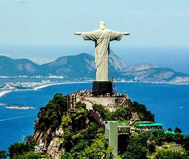
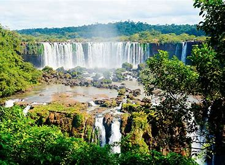
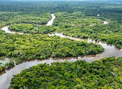
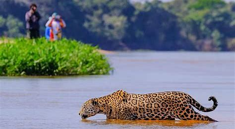

El Cristo Redentor es uno de los monumentos más emblemáticos de Brasil. Esta estatua de Jesús, que se encuentra en la cima del cerro Corcovado, ofrece una impresionante vista panorámica de la ciudad de Río de Janeiro.
Las Cataratas del Iguazú, ubicadas en la frontera entre Brasil y Argentina, son una de las cascadas más grandes y majestuosas del mundo. Este sitio natural es una maravilla de la naturaleza y ha sido declarado Patrimonio de la Humanidad por la UNESCO.
La Amazonia es la selva tropical más grande del mundo y es hogar de una biodiversidad impresionante. Los turistas pueden explorar la región en barcos, hacer senderismo o visitar comunidades indígenas, todo mientras experimentan la belleza natural del lugar.
El Pantanal es una de las mayores regiones de humedales del mundo, famosa por su vida silvestre y sus paisajes únicos. Es ideal para la observación de fauna, incluyendo jaguares, caimanes y una variedad de aves exóticas.
